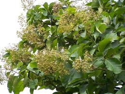
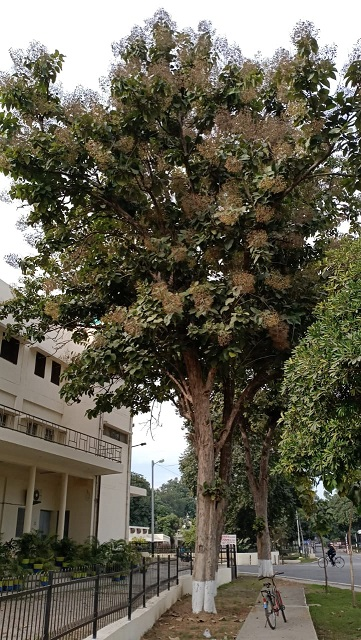

Teak
Scientific name = Tectona grandis
Teak is a tropical hardwood tree.It has small, fragrant white flowers arranged in dense clusters (panicles) at the end of the branches. These flowers contain both types of reproductive organs (perfect flowers). The large, papery leaves of teak trees are often hairy on the lower surface. Teak wood has a leather-like smell when it is freshly milled and is particularly valued for its
durability and water resistance. The wood is used for boat building, exterior construction, veneer, furniture, carving, turnings, and other small wood projects.